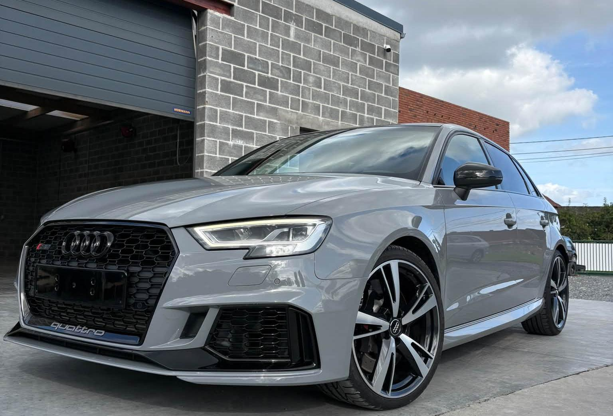
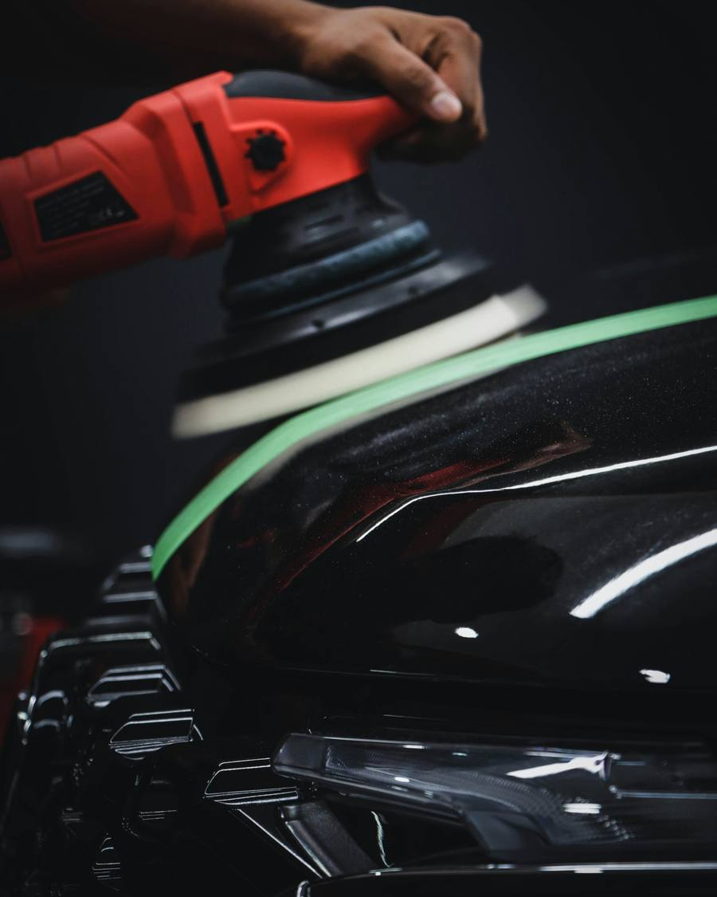
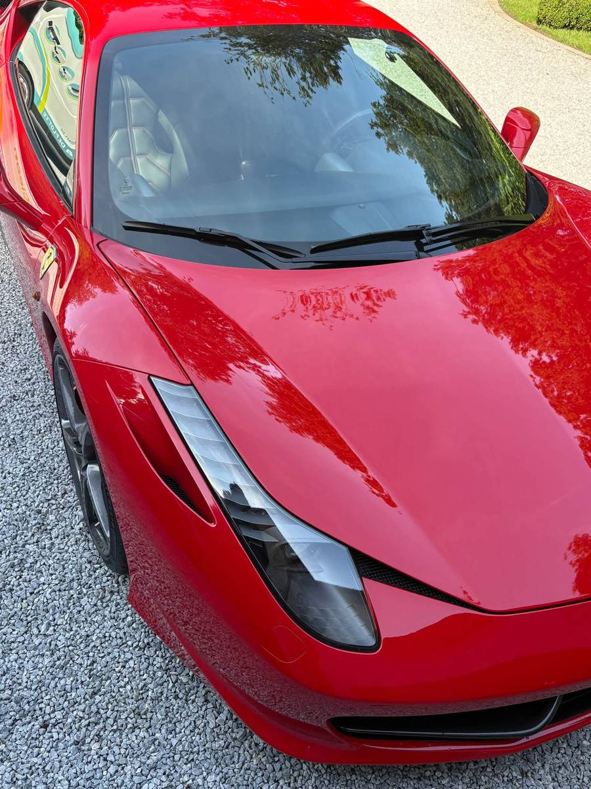
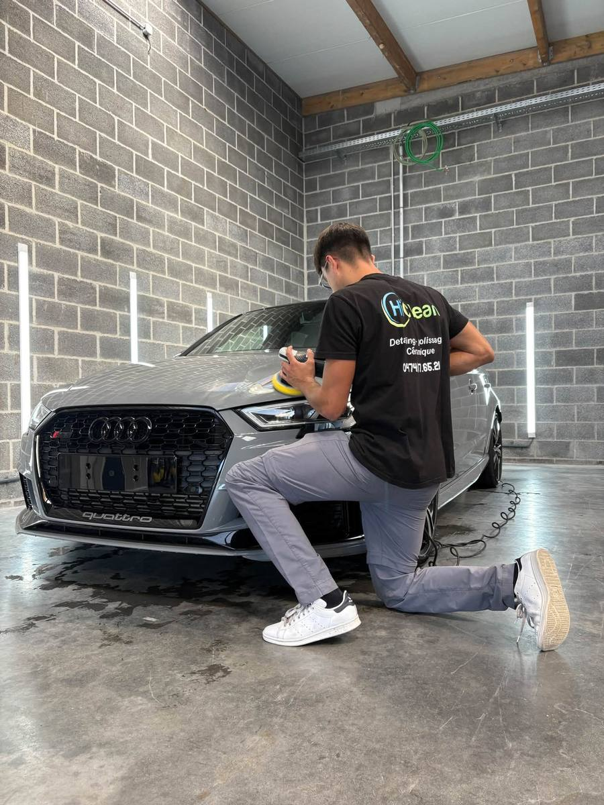
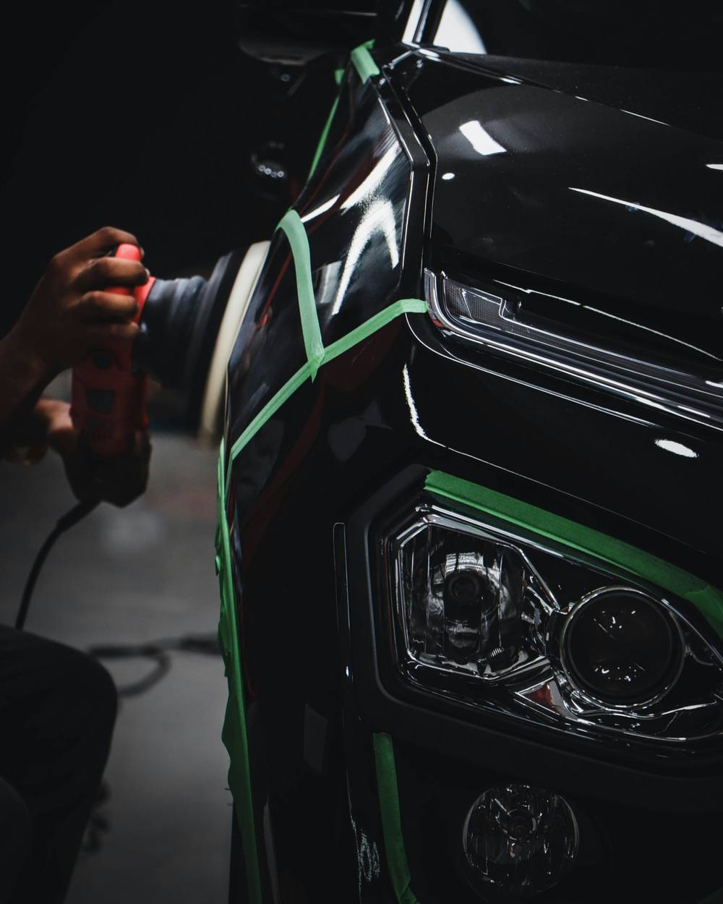
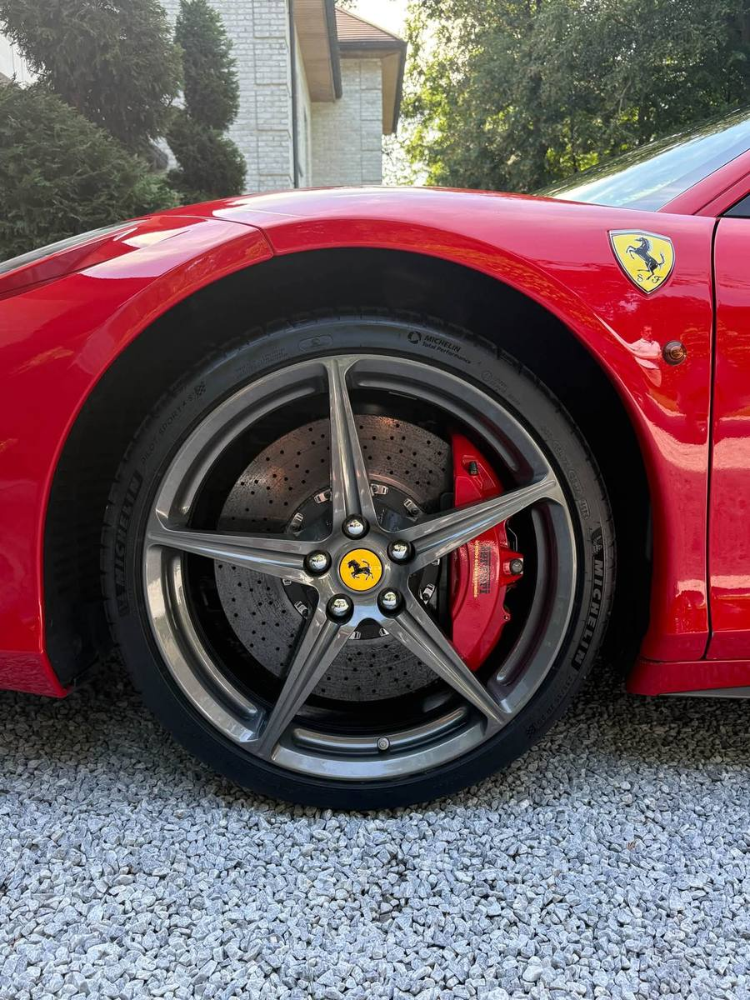
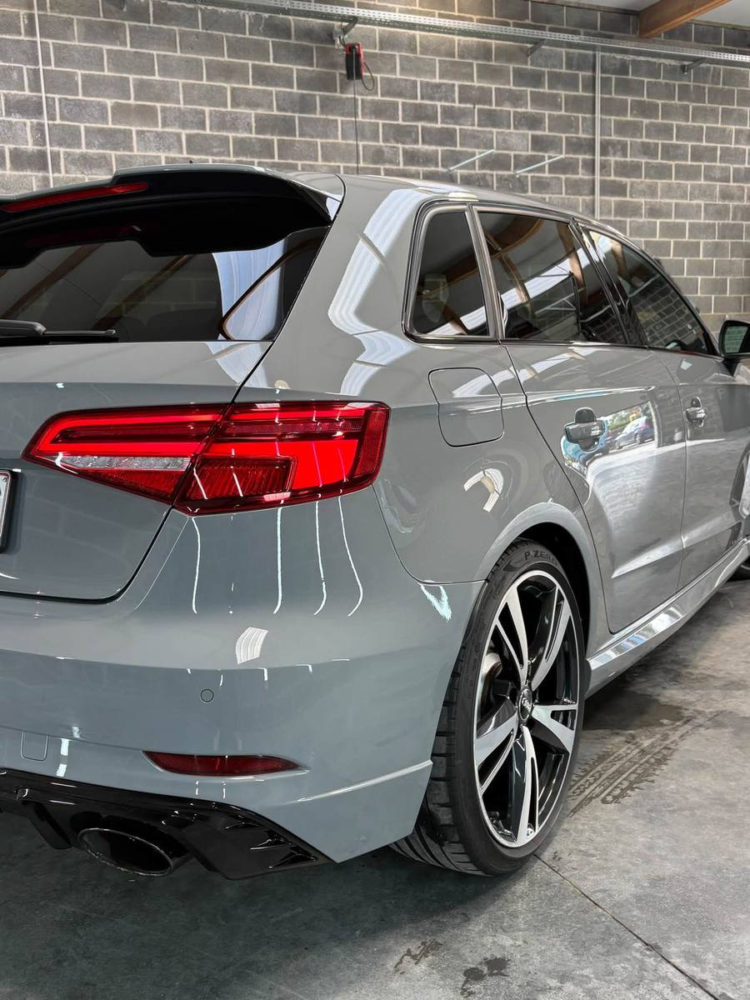
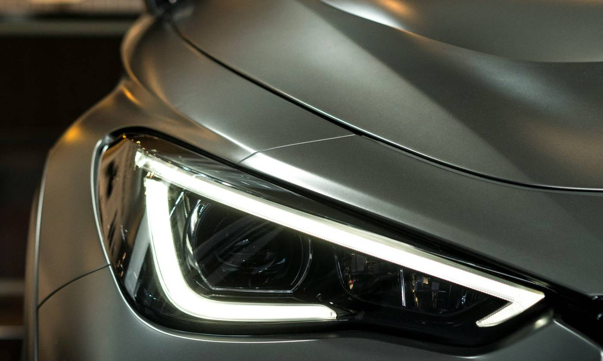

Polissage, céramique et detailing automobile dans le Hainaut
Un résultat comme la première fois, à domicile ou en entrepôt.
À propos
HiClean est né en octobre 2023. Nous redonnons aux véhicules du Hainaut leur état de sortie de concession. Detailing, polissage et traitement céramique, chez vous ou dans notre entrepôt.
Nos services

Polissage
La peinture retrouve sa brillance et sa profondeur.
Detailing
- Intérieur : sièges, plastiques, tapis, vitres
- Extérieur : lavage soigné, jantes, finitions
- Préparation de fin de leasing

Céramique
Une protection qui préserve la brillance.

Mobile et entrepôt
Nous venons chez vous partout dans le Hainaut, ou vous nous confiez votre véhicule.
Polissage et céramique
Corriger la peinture, puis la protéger

Polissage automobile
Avec le temps, les lavages et le soleil ternissent la peinture. Le polissage atténue les micro-rayures et les marques de lavage pour une brillance uniforme.
Traitement céramique
Appliqué sur une peinture préparée, il protège la carrosserie, crée un effet hydrophobe et rend l’entretien plus simple.
clients nous ont déjà confié leur véhicule.
Formulaire ou téléphone : vous décrivez votre véhicule.
Nous nous déplaçons partout dans le Hainaut.
Votre véhicule ressort comme au premier jour.
Nos réalisations


Ils nous ont fait confiance
Service ponctuel et impeccable. Le résultat est une voiture qui semble sortir de chez le concessionnaire.RenaudFin de leasing
Excellent service et très aimable. Mon Yeti de dix ans est ressorti comme neuf, intérieur comme extérieur.AndréRemise à neuf
Nos camionnettes sont entretenues chaque mois : un vrai plaisir de rouler dans un habitacle propre.T.O.A ToituresGestion de flotte
Partout dans le Hainaut
Nous nous déplaçons chez vous. Gestion de flotte, nettoyage de fin de chantier et de canapé aussi disponibles.
- Mons
- Charleroi
- La Louvière
- Tournai
- Binche
- Soignies
- Ath
- Mouscron
- Dour
Intervenez-vous à domicile ou en entrepôt ?
Les deux : nous nous déplaçons partout dans le Hainaut, ou nous vous accueillons en entrepôt.
Quelle différence entre polissage et céramique ?
Le polissage corrige les micro-rayures et ravive la brillance. Le traitement céramique protège ensuite la peinture et facilite l’entretien.
Proposez-vous des services pour les entreprises ?
Oui : entretien régulier de flottes de véhicules et nettoyage de fin de chantier.
Comment obtenir un devis ?
Remplissez le formulaire ci-dessous ou appelez le 0474 87 65 21.

Informations légales
Mentions légales
Éditeur du site : dénomination ou nom de l’indépendant, forme juridique, enseigne HiClean. Siège : adresse complète. Numéro d’entreprise (BCE) : 0XXX.XXX.XXX. TVA : BE 0XXX.XXX.XXX, si assujetti. Téléphone : 0474 87 65 21. E-mail : contact@hiclean.be.
Hébergeur : nom et adresse de l’hébergeur.
Propriété intellectuelle : les textes, le logo et les photographies de HiClean sont protégés. Toute reproduction sans accord écrit est interdite. Certaines images d’illustration proviennent d’Unsplash et sont utilisées selon la licence Unsplash.
Responsabilité : les informations du site sont données à titre indicatif et ne constituent pas une offre contractuelle. Chaque prestation fait l’objet d’un devis personnalisé.
Droit applicable : droit belge. En cas de litige avec un consommateur, une solution amiable peut être recherchée auprès du Service de médiation pour le consommateur (mediationconsommateur.be).
Politique de confidentialité
HiClean respecte le Règlement général sur la protection des données (RGPD) et la loi belge du 30 juillet 2018.
Responsable du traitement
L’éditeur identifié dans les mentions légales. Contact : contact@hiclean.be.
Données et finalités
Lorsque vous nous écrivez ou nous appelez, nous traitons votre nom, votre téléphone ou e-mail, le service souhaité et votre message. Elles servent à répondre à votre demande et à établir un devis (mesures précontractuelles), puis à exécuter la prestation et respecter nos obligations comptables. Le formulaire du site prépare un e-mail dans votre messagerie : le site n’enregistre rien.
Destinataires et conservation
Vos données ne sont ni vendues ni cédées. Seuls HiClean et ses prestataires techniques (messagerie, hébergement) y ont accès. Les demandes sans suite sont conservées durée à confirmer, par ex. 12 mois. Les documents comptables sont conservés 7 ans.
Vos droits
Vous pouvez demander l’accès, la rectification, l’effacement, la limitation, la portabilité de vos données ou vous opposer à leur traitement, en écrivant à contact@hiclean.be. Nous répondons dans un délai d’un mois.
Réclamation
Autorité de protection des données, Rue de la Presse 35, 1000 Bruxelles, contact@apd-gba.be, autoriteprotectiondonnees.be.